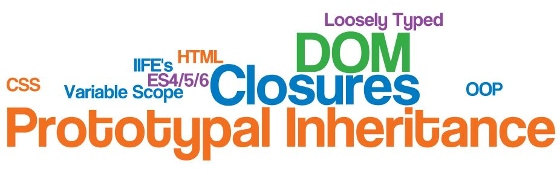
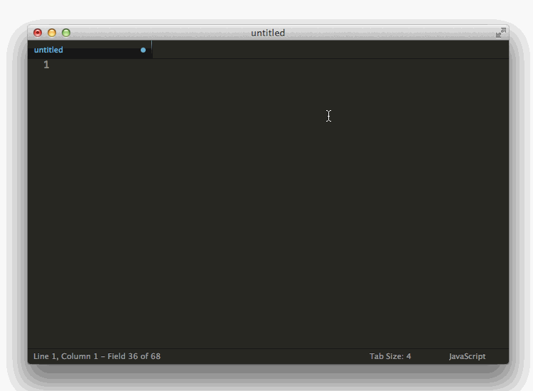
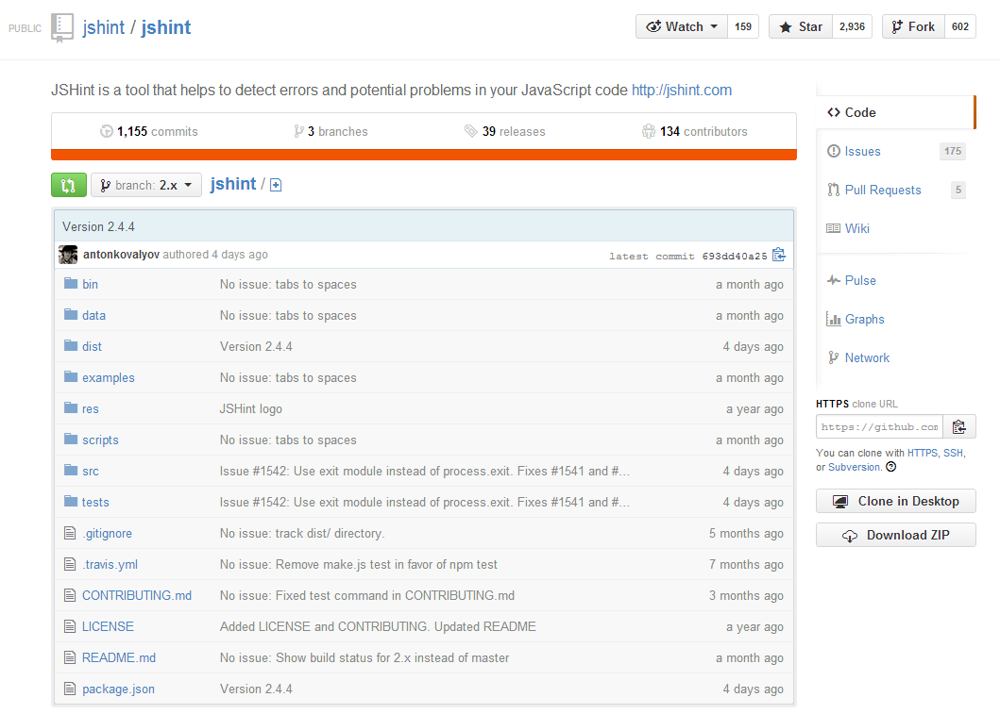
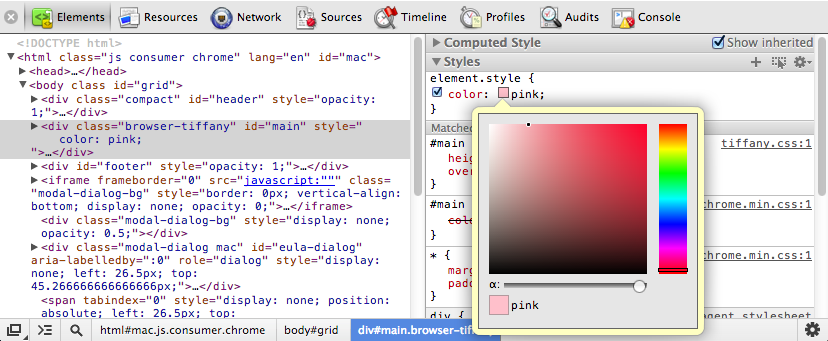

Javascript Tooling
Love your Development Workflow!
Josh Peterson
Background
I'm a developer at
I live in
I'm from 
"JavaScript is hard"
Why?
Because of these?
No, not really
(well, mostly)
Because
JS workflows are unopinionated.
(unlike JS developers...)
- Where's my IDE?
- Which framework is "best"?
- How/why do I build?
- No really, where's my IDE?

Tools Save the Day!
Tools solve our workflow problem
Writing Code
Sublime Text / Atom / WebStorm

Syntax Errors
JSHint / JSLint

Dependency Management
Bower
CSS is not code
Stylus / SASS / LESS

Task Automation
Grunt / Gulp / CodeKit / Mixture
Debugging
Browser Dev Tools / Postman
